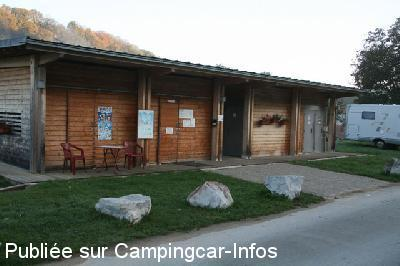
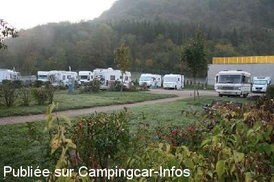
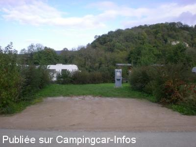
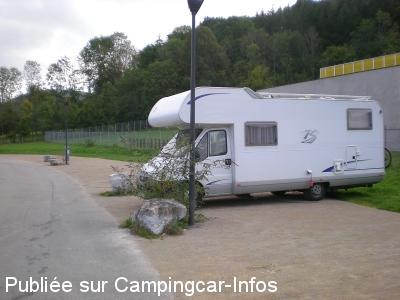
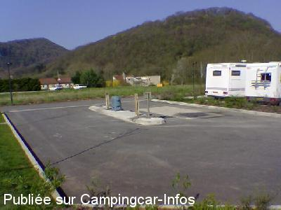
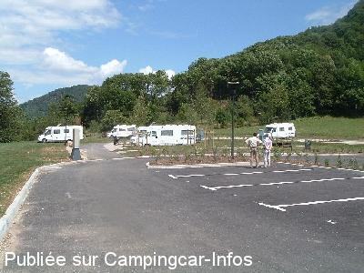

ASN = Aire de services avec stationnement nuit possible de :
BAUME LES DAMES
(N° 139)
Accès/adresse :
Quai du Canal
25110 BAUME LES DAMES
25110 BAUME LES DAMES
Latitude : (Nord) 47.34035° Décimaux ou 47° 20′ 25′′
Longitude : (Est) 6.35702° Décimaux ou 6° 21′ 25′′
Tarif : 2015
Stationnement, services, électricité : 8,80 à 9,30 €
Services C-C de passage : 2 €
Douche : 1,70 €
Taxe de séjour : 0,20 €
Type de borne : Plateforme
Services :


Douches
Épicerie de dépannage
Point informations
Autres informations :
Ouvert toute l'année
30 emplacements sur asphalte
herbe et graviers
Tel : + 33 (0)381 843 889
http://www.baume-les-dames.org/complexe-touristique.html

Le 30/10/2011 par Paul Guntz

Le 30/10/2011 par Paul Guntz

Le 19/10/2010 par JJac30700

Le 19/10/2010 par JJac30700

Le 20/05/2006 par La Roulotte à Kiki

Le 13/07/2005 par MICO
de
chantal et jack
le 15/03/2016 :
passage en novembre 2015 avant de partir faire les marchés de noel en alsace et c'est toujours aussi agréable de s'arrêter ici, tout nous convient, et oui
une petite marche à pieds et vous pouvez faire vos courses et une bonne douche c'est génial et des conseils de visite un plus
passage en novembre 2015 avant de partir faire les marchés de noel en alsace et c'est toujours aussi agréable de s'arrêter ici, tout nous convient, et oui
une petite marche à pieds et vous pouvez faire vos courses et une bonne douche c'est génial et des conseils de visite un plus
de
Roland 61
le 25/07/2015 :
Stationnement : 9,40€ (2 personne), possibilité par cb. Comme sur un camping. Eau et vidanges gratuites avec le stationnement. Endroit calme, plusieurs emplacements avec séparations de haies, empierrés. Une quarantaine de places. Boulanger le matin.
Stationnement : 9,40€ (2 personne), possibilité par cb. Comme sur un camping. Eau et vidanges gratuites avec le stationnement. Endroit calme, plusieurs emplacements avec séparations de haies, empierrés. Une quarantaine de places. Boulanger le matin.
de
rpp10
le 23/07/2015 :
Aire agréable proche du centre ville
Aire agréable proche du centre ville
de
Coco 25
le 16/05/2015 :
Aire bien agencée mais le tarif un peu excessif: 9€30 avec électricité (tarif similaire a celui du camping guère plus loin et géré par la même commune) sachant que minimum 90% des C.C sont autonomes,
Aire bien agencée mais le tarif un peu excessif: 9€30 avec électricité (tarif similaire a celui du camping guère plus loin et géré par la même commune) sachant que minimum 90% des C.C sont autonomes,
de
Pierre Ph
le 11/02/2015 :
Je trouve cette air très correcte je suis d'accord avec le commentaire précédent.
Nous passons tous les ans et Nous la trouvons très bien, prix parking + service + électricité.
Rien a dire nous avons vu des aires plus cher et moins bien que celle-ci.
Je trouve cette air très correcte je suis d'accord avec le commentaire précédent.
Nous passons tous les ans et Nous la trouvons très bien, prix parking + service + électricité.
Rien a dire nous avons vu des aires plus cher et moins bien que celle-ci.
de
tmomic33
le 05/08/2014 :
Et bien moi comparé au deux commentaires précédent de 2013 je mettrai un bémol, cette aire est très agréable et ses emplacements relativement important avec une surface d'au moins 35m² ce qui permet de sortir l'auvent.
Son prix de 8,80€ pour la période du 01/04 au 31/10 et de 9,30€ du 1/11 au 31/03/2014, est dans la moyenne des aires de ce type et il n'y a rien de surprenant si ce n'est quelle est plus chère en hiver qu'en été, surement a cause des chauffages pour l'hiver.
Et bien moi comparé au deux commentaires précédent de 2013 je mettrai un bémol, cette aire est très agréable et ses emplacements relativement important avec une surface d'au moins 35m² ce qui permet de sortir l'auvent.
Son prix de 8,80€ pour la période du 01/04 au 31/10 et de 9,30€ du 1/11 au 31/03/2014, est dans la moyenne des aires de ce type et il n'y a rien de surprenant si ce n'est quelle est plus chère en hiver qu'en été, surement a cause des chauffages pour l'hiver.
de
michelene
le 19/08/2013 :
Déception ! nous avions un excellent souvenir de Beaume mais en arrivant, ce 11 aout 2013, à la vue de ce nouveau parking très serré et complet, le prix ... nous sommes repartis sur le parking de la gare à Laissey pour y passer une bonne nuit tranquille et faire du vélo sur l'Eurovélo 6 qui passe à coté.
Déception ! nous avions un excellent souvenir de Beaume mais en arrivant, ce 11 aout 2013, à la vue de ce nouveau parking très serré et complet, le prix ... nous sommes repartis sur le parking de la gare à Laissey pour y passer une bonne nuit tranquille et faire du vélo sur l'Eurovélo 6 qui passe à coté.
de
Pat-Ardennes 08
le 25/05/2013 :
§ Idem au commentaire précédent, magnifique site !mais grand dommage pour Baumes les Dames , dont nous étions des fervents admirateurs de la beauté de son site et depuis quelques Années ! à savoir , 9,50 Euros la nuitée ce n'est plus pour notre bourse! quand on voyagent plusieurs Mois dans l'Année , alors , adieu jolie Baume les Dames ! nous en garderons quand même d'excellents et supers souvenirs dans notre album photos ! petits regrets , mais d'autres horizons similaires nous attendent !
§ Idem au commentaire précédent, magnifique site !mais grand dommage pour Baumes les Dames , dont nous étions des fervents admirateurs de la beauté de son site et depuis quelques Années ! à savoir , 9,50 Euros la nuitée ce n'est plus pour notre bourse! quand on voyagent plusieurs Mois dans l'Année , alors , adieu jolie Baume les Dames ! nous en garderons quand même d'excellents et supers souvenirs dans notre album photos ! petits regrets , mais d'autres horizons similaires nous attendent !
de
Noël
le 22/02/2013 :
§ Nous fréquentons cette aire depuis sa mise en place (en fin de voyage car à 50 km de chez nous). Très bien faite et très fréquentée (parfois par des cc ventouses). Dernièrement nous avons voulu nous y arrêter de nouveau et nous avons constaté que le tarif était passé à 9,50 euros. Alors nous avons passé notre chemin.
§ Nous fréquentons cette aire depuis sa mise en place (en fin de voyage car à 50 km de chez nous). Très bien faite et très fréquentée (parfois par des cc ventouses). Dernièrement nous avons voulu nous y arrêter de nouveau et nous avons constaté que le tarif était passé à 9,50 euros. Alors nous avons passé notre chemin.
de
Alain et Gilles
le 29/08/2012 :
Quelle chance d'avoir pu trouver de la place ; arriver en fin de matinée ou midi pour trouver un emplacement libre. Super marché à proximité; belles pistes cyclables dans ce lieu magnifique et frais ; les emplacements sont larges avec éléctricité pour un tarif raisonnable. Bel automne à tous.
Quelle chance d'avoir pu trouver de la place ; arriver en fin de matinée ou midi pour trouver un emplacement libre. Super marché à proximité; belles pistes cyclables dans ce lieu magnifique et frais ; les emplacements sont larges avec éléctricité pour un tarif raisonnable. Bel automne à tous.
de
Jean-Bernard Boschung (iron)
le 01/04/2012 :
De passage pour la nuit du 31/03 au 01/04, je confirme que le montant est bien de 8€, services et électricité compris.
Les services seuls (sans nuités/passage) sont indiqués à 2€, a mettre dans une boite au bureau s'il n'y a personne.
Lors de notre passage, l'aire était complète (aire principale et parking de délestage le long de la route). Nous avons pu prendre la dernière place vers 16h30.
De passage pour la nuit du 31/03 au 01/04, je confirme que le montant est bien de 8€, services et électricité compris.
Les services seuls (sans nuités/passage) sont indiqués à 2€, a mettre dans une boite au bureau s'il n'y a personne.
Lors de notre passage, l'aire était complète (aire principale et parking de délestage le long de la route). Nous avons pu prendre la dernière place vers 16h30.
de
Robert CHASSAGNAC
le 09/09/2011 :
Cette tres belle aire est toujours un peu surchargée, mais a quelques centaines de metres je suis allé au camping, très bien et les services sont excellents, le boulanger le même, le pain et les croissants, sans commentaire les meilleurs et la boulangère tès sympa.
L'agent de service Monsieur Christian un grand chef.
La commune de BEAUME LES DAMES est un exemple pour le tourisme de plein air.
Cette tres belle aire est toujours un peu surchargée, mais a quelques centaines de metres je suis allé au camping, très bien et les services sont excellents, le boulanger le même, le pain et les croissants, sans commentaire les meilleurs et la boulangère tès sympa.
L'agent de service Monsieur Christian un grand chef.
La commune de BEAUME LES DAMES est un exemple pour le tourisme de plein air.
de
FRANCOTTE GUY
le 19/06/2010 :
Aire magnifique, si elles étaient toutes comme ça, ce serait un plaisir de voyager. Encore bravo à la commune
Aire magnifique, si elles étaient toutes comme ça, ce serait un plaisir de voyager. Encore bravo à la commune
de
Claude Froidevaux
le 12/05/2008 :
De passage le week-end de Pentecôte, nous voulons tout simplement dire un Grand Merci à Claire et sa collègue pour leur accueil chaleureux et les féliciter de garder leur calme face à des situations de camping-caristes odieux à qui tout est dû. Bravo à la commune de Baume les Dames!
De passage le week-end de Pentecôte, nous voulons tout simplement dire un Grand Merci à Claire et sa collègue pour leur accueil chaleureux et les féliciter de garder leur calme face à des situations de camping-caristes odieux à qui tout est dû. Bravo à la commune de Baume les Dames!